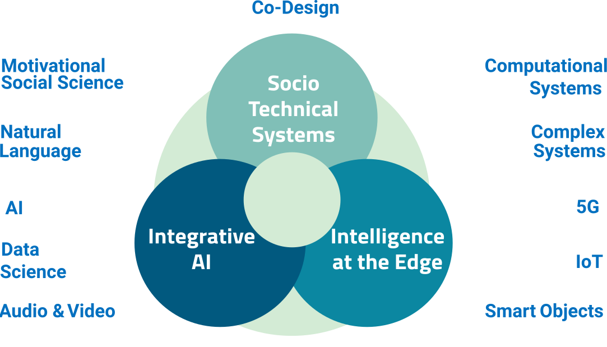
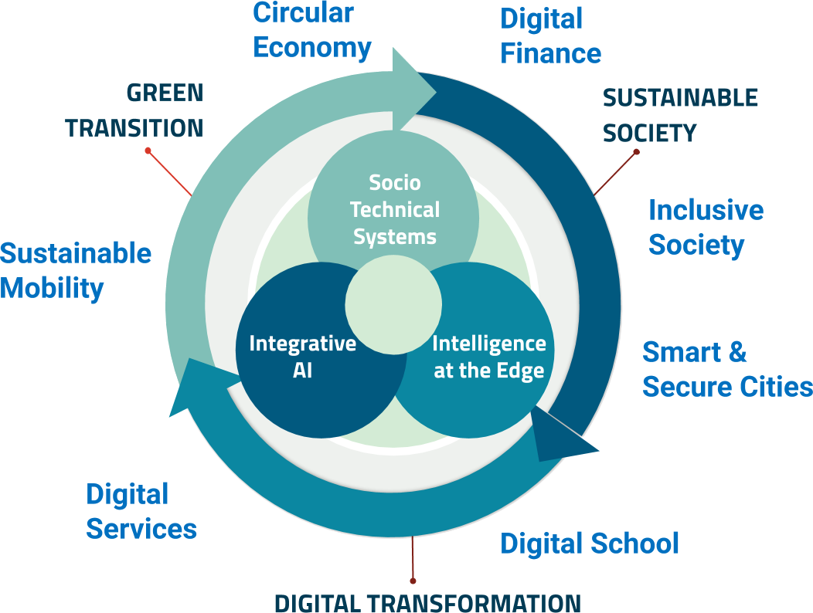

Vision
Digital technology has a pervasive impact on our life and is reshaping our society.
The challenge is to ensure that digital technology helps create a more sustainable, inclusive and secure digital society.
Mission
Advanced research and innovative digital technology to address key digital society challenges.
Research Focus

Integrative AI
Combine AI with NON-AI approaches and competences to:- understand the dynamics
- support decision making
- promote the change
Intelligence at the Edge
Distribute the intelligence and move it closer to where it is needed, by embedding it in sensors and network nodes, and by devising new network adaptation and service orchestration mechanisms.
Socio-Technical Systems
Steer the increasing interdependence of between social and technical systems into a symbiotic relationship (through complexity science, co-design and co-evolution, people engagement, positive behavioral change)
Impact Strategy

Digital Transformation
Adoption of Digital Technology by the PA to promote effectiveness and sustainability, to ensure transparency and inclusiveness, to attract the skills that are necessary to drive the change.
Green Transition
Digital technology for understanding, predicting and mitigating climate change, improving the efficiency of socio technical systems and promoting behavioral change.
Sustainable Society
Help building a society that is healthy and resilient also from a social (promoting social inclusion, preventing disinformation, averting discrimination) and economic (thorigh financial inclusion, circular economy, and impact investing) point of view.
Organization
Director

Research Units
COMUNE
Complex Multilayer Networks
Complexity science and multilayer networks for modeling and analysis of collective phenomena and building resilient societies
head Manlio De Domenico
DKM
Data and Knowledge Management
Learning knowledge from data, integrating knowledge and reasoning about knowledge to support intelligent applications
head Luciano Serafini
DVL
Deep Visual Learning
Design and development of deep learning architectures for visual recognition tasks
head Elisa Ricci
DCL
Digital Commons Lab
design, development and analisys of digital commons based on open data
head Maurizio Napolitano
DH
Digital Humanities
Extraction and analysis of textual information from non-standard multilingual data to address societal issues
head Sara Tonelli
I3
Intelligent Interfaces and Interaction
Co-design and evaluation of socio-technical systems with specific reference to human-centred AI-based systems
head Massimo Zancanaro
LanD
Language and Dialog Technology
Language technology for sentiment analysis and persuasive communication
head Marco Guerini
MOBS
Mobile and Social Computing
AI and computational social science models for building more sustainable and efficient organizations, cities, and financial systems
head Bruno Lepri

MoDiS
Motivational Digital Systems
Artificial Intelligence for motivation and behavior change in socio-technical systems
head Annapaola Marconi
RSDE
Remote Sensing for Digital Earth
Remote sensing and AI for the digital monitoring and the sustainable management of the Earth
head Francesca Bovolo
SENSE
Smart Networks and Services
Multi-access edge/fog computing, recursive and distributed service orchestration, and observable AI for network control and management
deputy head Cristina Costa
Support Units
PMG
Project Management Group
Organizing and supporting project financing and project management in Digital Society
head Matteo Georosa
DS Lab
Digital Society Laboratory
Digital platforms and advanced digital tools to support research and impact in Digital Society
head Raman Kazhamiakin